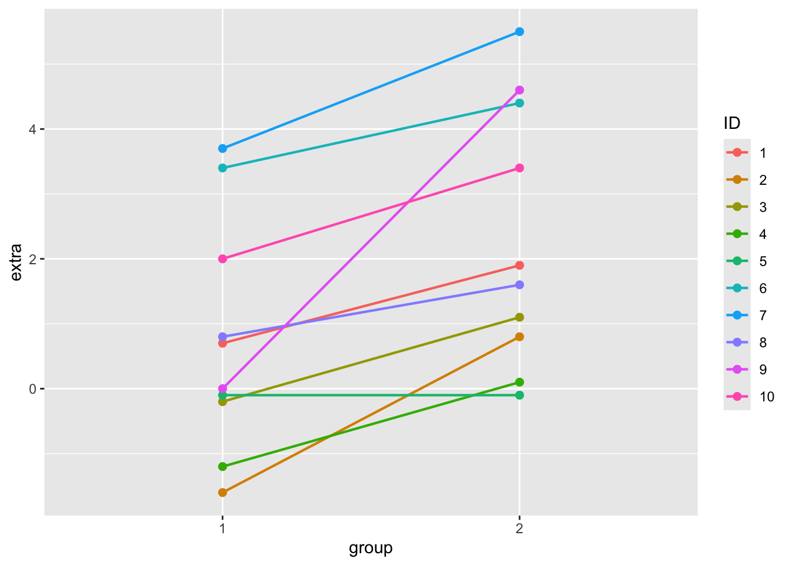

The Assumption of Independence Has Been Violated! (MLM increases our power and reliability as scientists.)
Multiple measures of an individual gives you a more reliable estimate of what and who they are.
A person serves as their own control; examining how an individual changes over time (as a result of some other variable or an experimental manipulation)
Better than a purely “fixed effects” approach.
While we could just account for group variation by adding this to our model as dummy-coded group identifiers…
…the MLM results in a simpler model (less coefficients; we just allow the intercepts and slopes to vary)
Model more complex phenomenon.
How people change over time (within-person variation).
Simpson’s Paradox
Other Examples?
How Do We Do This in R?
Example 1 : The Sleep Dataset
From the ?sleep dataset; “Data which show the effect of two soporific drugs (increase in hours of sleep compared to control).”
Extra : increase in hours of sleep
Group : drug given (1 = control; 2 = drug)
ID : patient ID
The Linear Model (a “Between Person” Study)
library(ggplot2)ggplot(sleep, aes(y = extra, x = group)) +geom_point(size=2) +stat_summary(fun.data=mean_se, color ='red', size =1.25, linewidth =2)
lmod <-lm(extra ~as.factor(group), data = sleep)summary(lmod)
Call:
lm(formula = extra ~ as.factor(group), data = sleep)
Residuals:
Min 1Q Median 3Q Max
-2.430 -1.305 -0.580 1.455 3.170
Coefficients:
Estimate Std. Error t value Pr(>|t|)
(Intercept) 0.7500 0.6004 1.249 0.2276
as.factor(group)2 1.5800 0.8491 1.861 0.0792 .
---
Signif. codes: 0 '***' 0.001 '**' 0.01 '*' 0.05 '.' 0.1 ' ' 1
Residual standard error: 1.899 on 18 degrees of freedom
Multiple R-squared: 0.1613, Adjusted R-squared: 0.1147
F-statistic: 3.463 on 1 and 18 DF, p-value: 0.07919
The Linear Model, with ID as a grouping factor (a “Within-Person” Study)
Many linear models! Look at the graph below. What’s going on? What do you observe? How might this help us understand the relationship between these two variables?
ggplot(sleep, aes(y = extra, x = group, color = ID)) +geom_point(size=2) +geom_line(aes(group = ID), linewidth =0.75)

Random Intercepts : Still just one equation. But a lot more lines!
#install.packages("lme4")library(lme4)
Loading required package: Matrix
library(lmerTest)
Attaching package: 'lmerTest'
The following object is masked from 'package:lme4':
lmer
The following object is masked from 'package:stats':
step
library(Matrix)mlmod <-lmer(extra ~as.factor(group) + (1| ID), data = sleep)summary(mlmod)
Linear mixed model fit by REML. t-tests use Satterthwaite's method [
lmerModLmerTest]
Formula: extra ~ as.factor(group) + (1 | ID)
Data: sleep
REML criterion at convergence: 70
Scaled residuals:
Min 1Q Median 3Q Max
-1.63372 -0.34157 0.03346 0.31511 1.83859
Random effects:
Groups Name Variance Std.Dev.
ID (Intercept) 2.8483 1.6877
Residual 0.7564 0.8697
Number of obs: 20, groups: ID, 10
Fixed effects:
Estimate Std. Error df t value Pr(>|t|)
(Intercept) 0.7500 0.6004 11.0814 1.249 0.23735
as.factor(group)2 1.5800 0.3890 9.0000 4.062 0.00283 **
---
Signif. codes: 0 '***' 0.001 '**' 0.01 '*' 0.05 '.' 0.1 ' ' 1
Correlation of Fixed Effects:
(Intr)
as.fctr(g)2 -0.324
Fixed Effects : The “Average” across all the grouping variables. Our friend the linear model!
Intercept : ???? (discussed in lecture!)
Slope : ???? (discussed in lecture!)
Correlation of Fixed Effects : How our intercept and slope are related to each other. ????? (discussed in lecture!)
Random Effects :
ICC = Intraclass Correlation Coefficient = how much the variation in our grouping variable (here : subject) explains total variation.
To calculate : take variance of intercept / total variance
More about those random effects. We can examine them for the individuals in the study. They are adjustments to the intercept (people start with different baselines of sleep.)
By default, lmer does not run statistical tests. I heard this was because the author of the package was philosophically opposed to them, but I think it’s also because there are continued debates about how best to calculate and interpret p-values for statistics that, by definition, can vary.
You can report confidence intervals from the results of the lmer model.
However, if you really want the stars, there’s another package that adds the stars, and gives some other useful features.
#install.packages("lmerTest")library(lmerTest) # note that the function lmer from package lme4 has been masked.mlmod <-lmer(extra ~as.factor(group) + (1| ID), data = sleep) # the same model; same equationsummary(mlmod) # new output!
Linear mixed model fit by REML. t-tests use Satterthwaite's method [
lmerModLmerTest]
Formula: extra ~ as.factor(group) + (1 | ID)
Data: sleep
REML criterion at convergence: 70
Scaled residuals:
Min 1Q Median 3Q Max
-1.63372 -0.34157 0.03346 0.31511 1.83859
Random effects:
Groups Name Variance Std.Dev.
ID (Intercept) 2.8483 1.6877
Residual 0.7564 0.8697
Number of obs: 20, groups: ID, 10
Fixed effects:
Estimate Std. Error df t value Pr(>|t|)
(Intercept) 0.7500 0.6004 11.0814 1.249 0.23735
as.factor(group)2 1.5800 0.3890 9.0000 4.062 0.00283 **
---
Signif. codes: 0 '***' 0.001 '**' 0.01 '*' 0.05 '.' 0.1 ' ' 1
Correlation of Fixed Effects:
(Intr)
as.fctr(g)2 -0.324
ranova(mlmod) # a way to test whether inclusion of random effect improves the model fit or not.
A Neat Thing : The “Paired T-Test” is Just a Narrow Form of the MLM
d <- sleep # copying the datasleepwide <-data.frame(d[1:10,1], d[11:20,1]) # moving into wide formatnames(sleepwide) <-c("Extra1", "Extra2") # renaming variablessleepwide # new data; in the "wide" format.
t.test(sleepwide$Extra1, sleepwide$Extra2, paired = T) # comparing mean of T1 to mean of T2, assuming a paired distribution....
Paired t-test
data: sleepwide$Extra1 and sleepwide$Extra2
t = -4.0621, df = 9, p-value = 0.002833
alternative hypothesis: true mean difference is not equal to 0
95 percent confidence interval:
-2.4598858 -0.7001142
sample estimates:
mean difference
-1.58
What About Random Slopes?
For random intercepts and random slopes : Still just one equation….but….too many lines for the model to converge.
I’m adding Days as a Fixed IV (so I’ll get the average effect of # of days of sleep deprivation on reaction time)
I’m also adding a random intercept : (1 | Subject) that will estimate how much the intercept (the 1 term) of individual raction times (the level 2 variable) varies by Subject (the level 1 grouping variable).
library(lme4)l2 <-lmer(Reaction ~ Days + (1| Subject), data = sleepstudy)summary(l2)
Linear mixed model fit by REML ['lmerMod']
Formula: Reaction ~ Days + (1 | Subject)
Data: sleepstudy
REML criterion at convergence: 1786.5
Scaled residuals:
Min 1Q Median 3Q Max
-3.2257 -0.5529 0.0109 0.5188 4.2506
Random effects:
Groups Name Variance Std.Dev.
Subject (Intercept) 1378.2 37.12
Residual 960.5 30.99
Number of obs: 180, groups: Subject, 18
Fixed effects:
Estimate Std. Error t value
(Intercept) 251.4051 9.7467 25.79
Days 10.4673 0.8042 13.02
Correlation of Fixed Effects:
(Intr)
Days -0.371
How do we interpret the results of this model?
Fixed Effects : these deal with the “average” effects - ignoring all those important individual differences (which are accounted for in the random effects.)
Intercept = 251.41 = the average person’s reaction time at 0 days of sleep deprivation is 251.4 milliseconds.
Days = 10.47 = for every day of sleep deprivation, the average person’s reaction time increases by 10.47 MS; the standard error is an estimate of how much variation we’d expect in this average slope due
Random Effects : these describe those individual differences; specifcally the
Subject (Intercept) = 37.12
Residual = 30.99
Interpreting the Model (Random Intercepts and Slopes)
What model would we define?
lmer(Reaction ~ Days + (Days | Subject), data = sleepstudy)
Linear mixed model fit by REML ['lmerMod']
Formula: Reaction ~ Days + (Days | Subject)
Data: sleepstudy
REML criterion at convergence: 1743.628
Random effects:
Groups Name Std.Dev. Corr
Subject (Intercept) 24.741
Days 5.922 0.07
Residual 25.592
Number of obs: 180, groups: Subject, 18
Fixed Effects:
(Intercept) Days
251.41 10.47
How do we interpret the results of this model?
Would You Like to Learn More?
ATTEND NEXT WEEK : more on mixed effects (centering; cross-level interactions, and more!)